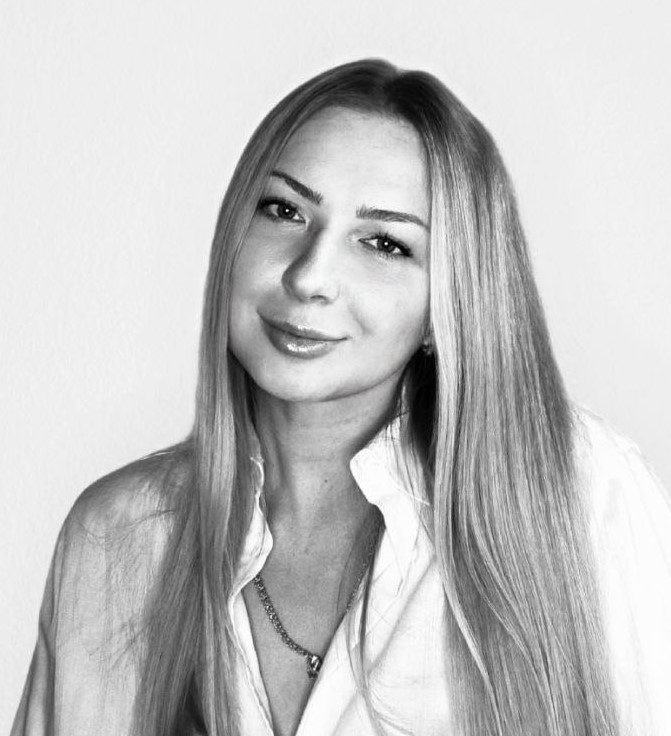

Valeriia Rusetska

I am looking for a Frontend Developer or Project Manager position
I have over 5 years of experience in the legal field and management teams.
Proficient in providing daily direction, motivation, and support to the team, as well as solving legal issues.
The highlevel communication skills, positive thinking regardless of the situation,
ability to appropriately prioritise, and experience in solving unsolvable tasks.
Knowledge of the basics of PM, SDLC, HTML, Java and OOP.
Go to google.com
Experience
- Law Assistant to Head of NAUDI
NAUDI | Kyiv | 01.2021 - 02.2022
- creation of various legal documents
- planning meetings, negotiations
- managed a team of lawyers
- Assistant Attorney
Attorney Severinenko V. | Kyiv | 07.2019 - 01.2021
- creation of various judicial documents
- assistance in court hearings to an attorney
- Legal Team Manager
NGO Sila Prava | Kyiv | 03.2018 - 07.2019
- supervised more than 60 lawyers in offices throughout Ukraine
- resolution of disputes and conflict situations in the team
- designing press ID and various graphic materials
- managing and motivating the team
- maintaining a social media page
- analyzed different information, making reports
- Lawyer
NGO Sila Prava | Kyiv | 01.2017 - 03.2018
- creating different legal procedural documents
- participation in court hearings
Hard Skills
- Basic knowleges of Java
- HTML
- Slack
- InteliJIdea
- MS Project
- G-Suite
Soft Skills
- Analytical thinking
- Positive Person
- Dedication to Work
- Stresstolerant
- Learning on the fly
- Team Player
Achievements
- Course "Introduction to Project Management"
- Course "Scrum and Project Management Methodologies"
- Course "Java Starter"
- Course "Interview questions about C#"